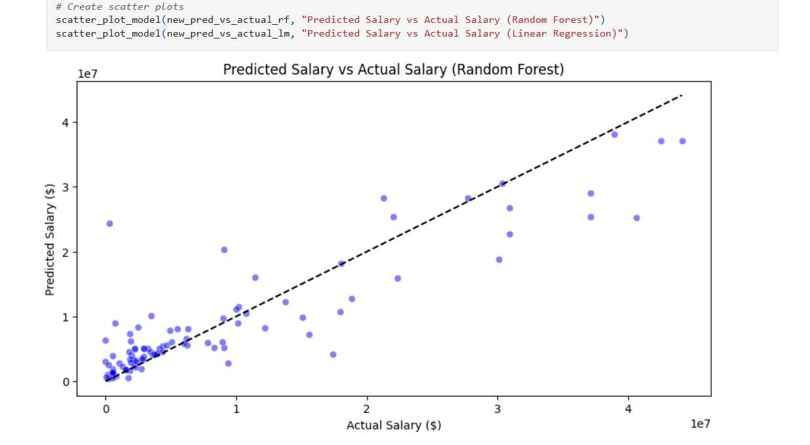
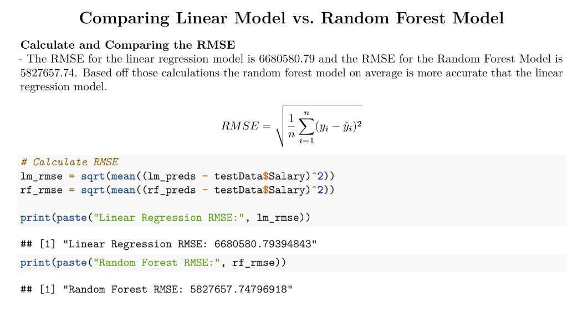
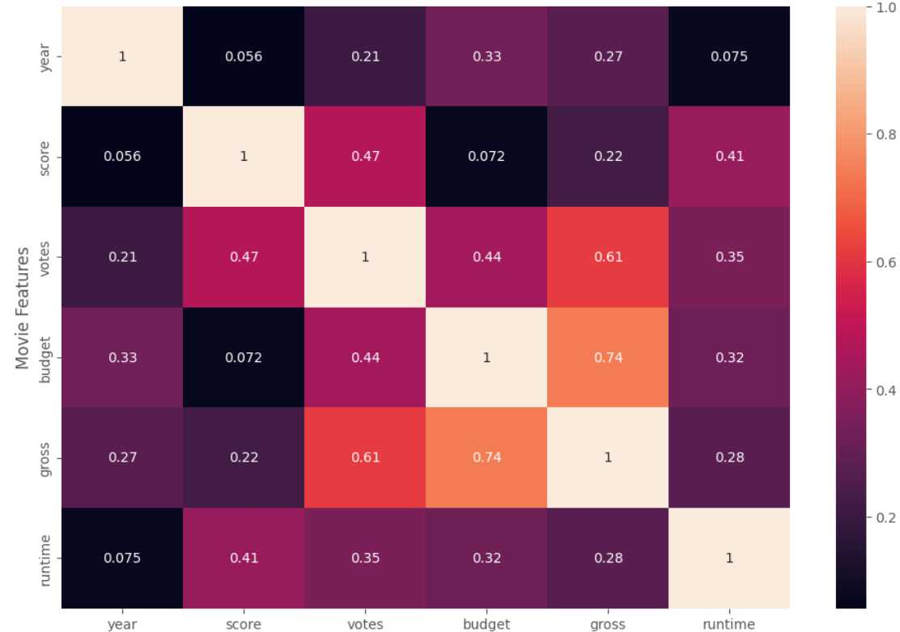
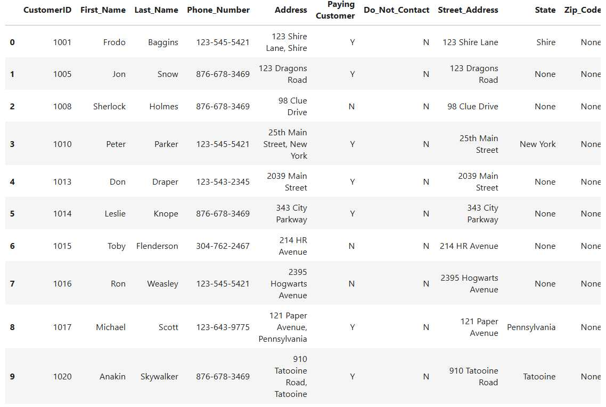

This project explores the relationship between NBA player performance metrics and their salaries using
Python. By combining and cleaning multiple datasets, I performed exploratory data analysis and built
visualizations to identify key trends. Tools like pandas, matplotlib, and seaborn were used to uncover insights.
The project demonstrates my skills in data wrangling, analysis, and presenting actionable insights through
clear visual storytelling.


This project focuses on building and comparing two predictive models to estimate NBA player salaries using performance and biometric data.
After cleaning and merging datasets containing player stats and salary information from the 2022–2023 NBA season, I explored key variables
such as points, rebounds, assists, and net rating. I then trained a Linear Regression model and a Random Forest model to predict salaries
and evaluated them using RMSE. The Random Forest model outperformed the linear model in accuracy, particularly for players with lower salaries.
This project demonstrates my skills in data wrangling, statistical modeling, and model evaluation using R.

In this project, I analyzed a dataset of movies to uncover relationships between various attributes. Using Python and libraries like pandas,
matplotlib, and seaborn, I conducted exploratory data analysis and visualized key trends. A major focus was on identifying correlations
between features—such as the connection between budget and revenue or vote average and popularity. This project highlights my ability to
clean real-world data, derive insights through statistical analysis, and present findings visually.

This project focused on cleaning and preparing a messy customer call list for analysis. Using Python and pandas, I handled common data quality issues such
as missing values and inconsistent formatting. Key tasks included standardizing phone numbers, handling null values, and splitting up adress by zip
code and state. This project showcases my attention to detail and ability to transform raw, unstructured data into a clean and analysis-ready format—a
vital step in any data analytics workflow.

This project is an interactive Tableau dashboard designed to analyze customer reviews of British Airways flights between March 2016 and December 2023. The dataset includes
passenger ratings on overall experience, cabin staff, food & beverages, entertainment, ground service, seat comfort, and value for money. This project provides a
comprehensive view of customer satisfaction based on different variables.